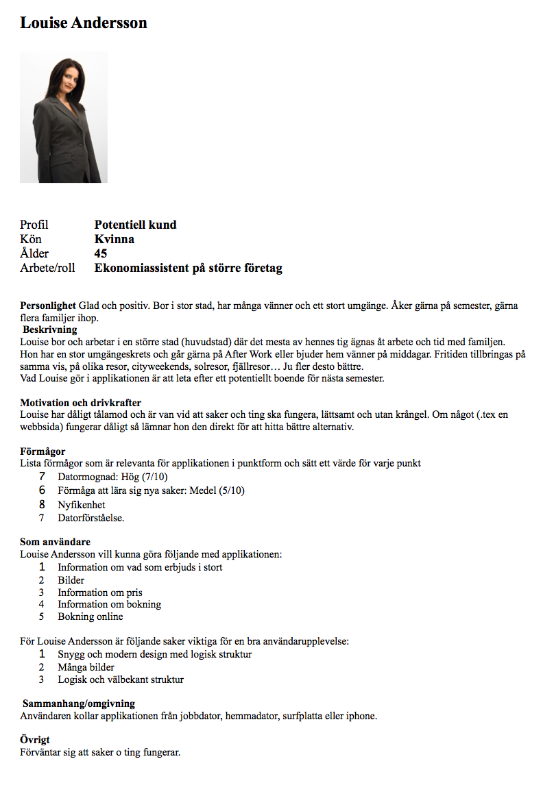

Slutuppgift
Workshops
Workshop 1 - paper prototyping och personas
Pappersprototypen


Framtagna personas
Sammanfattning
- Vilka förbättringar kan göras för att presentera funktionaliteten bättre för tänkt målgrupp?
- Vilka förbättringar kan göras för att förbättra interaktionsflödet för applikationen?
- Vilka andra lärdomar kan du dra från övningen med personas och paper prototyping som kan ge förbättringar för användarupplevelsen?
- Hur kan du använda dig av teknikerna paper prototyping och personas fortsättningsvis i ditt pågående projektarbete?
Lägg in mer relevant information som efterfrågas av målgruppen på startsidan, för att fånga besökaren. Fokusera mindre allmän information utan gå rätt på det relevanta såsom prisuppgifter och vad som erbjuds.
Lägg in länkar till det relevanta (bokning och priser) på många ställen så att besökaren hittar det snabbt.
Att göra sådana här prototyper och användartester i början av projektet, när det är löst och anpassningsbart. Naturligt är ju annars att testa senare, då man har en färdig produkt att testa på - men då är det ju egentligen försent! Man har då kommit för långt i implementationen för att vilja ändra för mycket.
Innan något nytt och stort implementeras och kodas, för att testa att det fungerar som det ska och kunna ändra innan det är för sent.